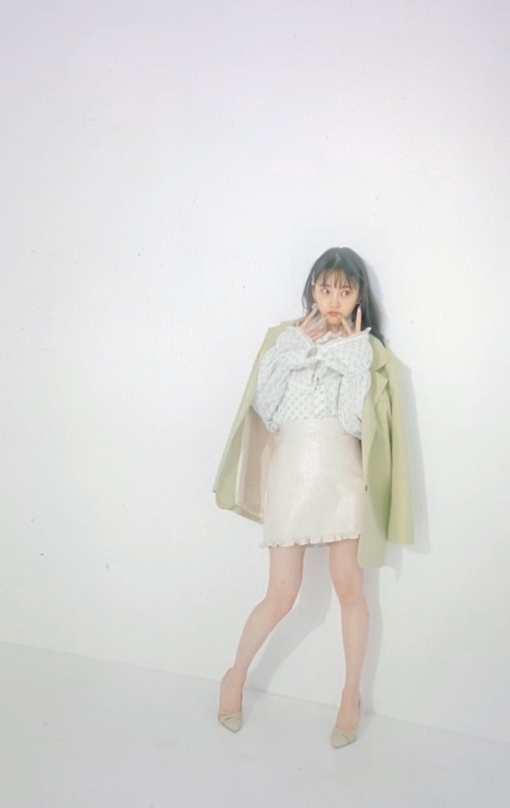
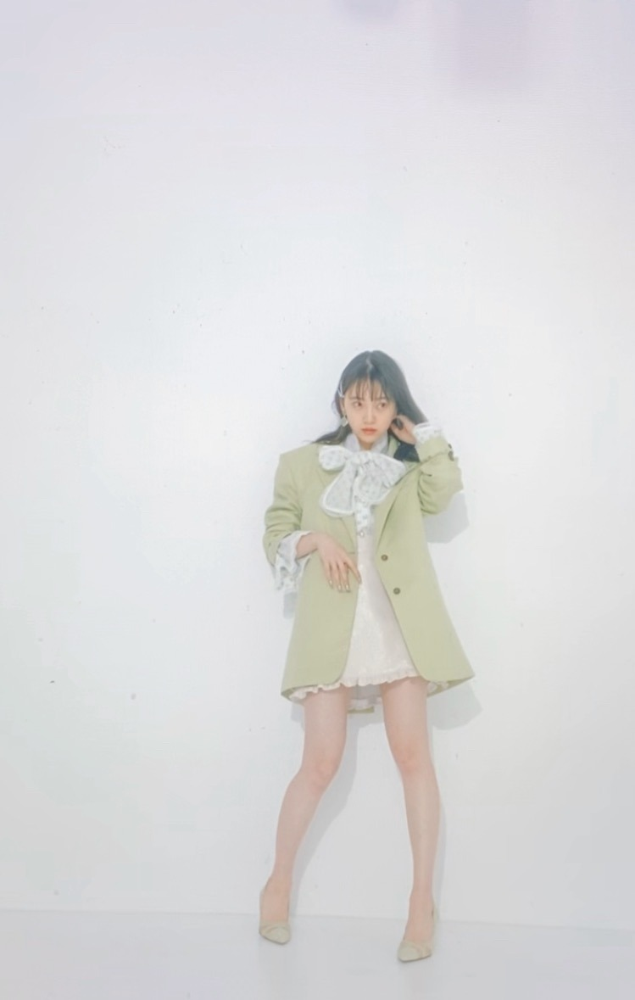
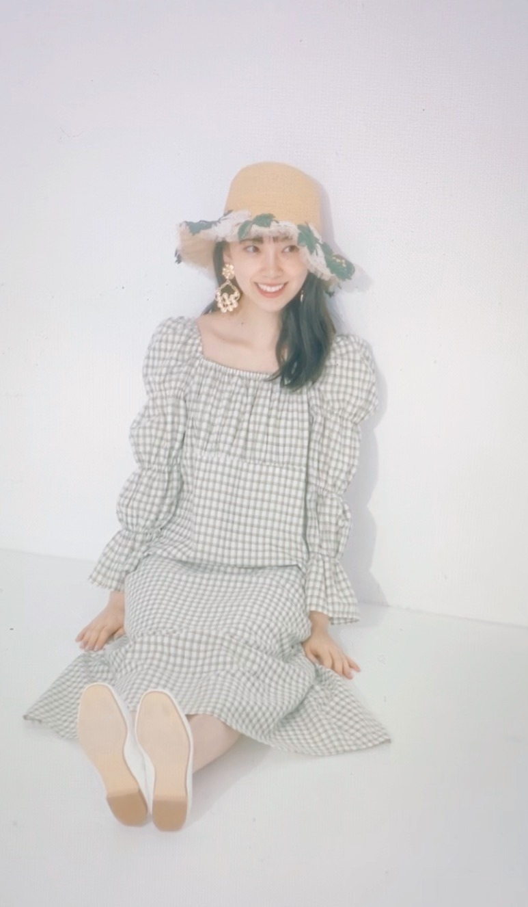
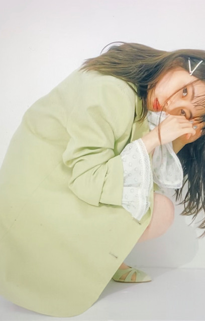

2020/0520Wed#未央奈のファッショニスタ
こんばんちは☺︎
今日はarの発売日です〜♡
そして長くやらせていただいた連載
"おもてなし達人への道"
がリニューアルして
わたしが好きなファッションを
テーマ毎に特集する
"未央奈のファッショニスタ" が
新しくスタートします♡
お楽しみに!
オフショット載せますね~
初回は最近トレンドでもあり
個人的にも気になってる
グリーン 特集です

スクラップブックみたいな感じで
かわいいの!
毎回いろんなテーマで楽しんでもらえるように
わたしも楽しみながら
連載でファッション熱を爆発させていきたいです( ຶ- ຶ)♡
そしてですね
2nd写真集
いつかの待ち合わせ場所
の告知動画が解禁されました!
みてね~☺︎
以上
2020/05/20 17:00
コメント(303)
ブログ更新ありがとう！最近暑くなってきたし、お互い体調に気を付けて頑張ろう！！次も絶対見るからね！
堀未央奈❤こんばんは❗ar今日発売しているんだね(^_^)v
俺は、見てないよ(T_T)新しくファッションの仕事が始まったんだね(^o^)v頑張ってね(^o^)v
動画見てみるね(^o^)v
体調に気を付けてこれからも頑張ってね(*^_^*)
未央奈可愛い(*^_^*)大好きだし愛してる ♥❤
写真集のタイトル決まったんだね(^o^)v
後写真集の発売まで１週間だね＼(^o^)／楽しみだね(^o^)v
俺は、見てないよ(T_T)新しくファッションの仕事が始まったんだね(^o^)v頑張ってね(^o^)v
動画見てみるね(^o^)v
体調に気を付けてこれからも頑張ってね(*^_^*)
未央奈可愛い(*^_^*)大好きだし愛してる ♥❤
写真集のタイトル決まったんだね(^o^)v
後写真集の発売まで１週間だね＼(^o^)／楽しみだね(^o^)v
未央奈ちゃん、こんばんは。
先ほどまでのインスタライブ拝見しました。ブログを読んでコメントしてみたり、モバメをもらったり、乃木恋やったり、インスタやツイッターを見たりはしていますが、インスタライブだとなんか久々に“生の未央奈ちゃん”に会えたような気がしてホントに嬉しかったです。特に今世の中がこんな感じだから実際に会う機会が全く無い状況ですからね(涙)写真集の発売日も近付いていますが、ぜひまたインスタライブやってほしいです。
今夜はこの後ＡＮＮですね。遅くまで大変でしょうが頑張って下さい。僕は明日も普通に仕事なので生で聴くのはさすがに難しいのですが、ラジコで明日にでもゆっくりと聴かせてもらいます。
では、いってらっしゃ～い！
先ほどまでのインスタライブ拝見しました。ブログを読んでコメントしてみたり、モバメをもらったり、乃木恋やったり、インスタやツイッターを見たりはしていますが、インスタライブだとなんか久々に“生の未央奈ちゃん”に会えたような気がしてホントに嬉しかったです。特に今世の中がこんな感じだから実際に会う機会が全く無い状況ですからね(涙)写真集の発売日も近付いていますが、ぜひまたインスタライブやってほしいです。
今夜はこの後ＡＮＮですね。遅くまで大変でしょうが頑張って下さい。僕は明日も普通に仕事なので生で聴くのはさすがに難しいのですが、ラジコで明日にでもゆっくりと聴かせてもらいます。
では、いってらっしゃ～い！
未央奈さん、ブログ更新ありがとう。どこにでもいるおっさんです。
写真集、もうすぐだね。
早く見たいな。
遅くまでお仕事大変だね。体調管理しっかりね。
ではは
ひでき
写真集、もうすぐだね。
早く見たいな。
遅くまでお仕事大変だね。体調管理しっかりね。
ではは
ひでき
こんばんわん
ブログ更新ありがと～
リニューアル！
堀ちゃんのファッション好きだからうれち
グリーンって合わせるの難しくて(私的に)避けてきた色だから、見て参考にするね
告知動画今から見てきます！
ではまた(*´▽｀*)
ブログ更新ありがと～
リニューアル！
堀ちゃんのファッション好きだからうれち
グリーンって合わせるの難しくて(私的に)避けてきた色だから、見て参考にするね
告知動画今から見てきます！
ではまた(*´▽｀*)
毎月arの発売を楽しみにしてます！堀さん、更に綺麗になってますね！
今回のファッションは初夏らしくてお洒落で可愛い

前回も今日(5/20)もインスタライブ見たよ！
今日は途中からだったから少ししか見れなかったけど
見れて良かった！
告知YouTube動画も見て好評価し、コメントも
したかな
またインスタライブをするときは最初から最期まで
観覧できるように神様にお祈りしとくね！！
平日だったら午後10:30くらいからインスタライブを
始めればより多くの日本全国の未央奈ちゃんファンの
人たちが最初から最期まで観覧できるかもよ
前回も今日(5/20)もインスタライブ見たよ！
今日は途中からだったから少ししか見れなかったけど
見れて良かった！
告知YouTube動画も見て好評価し、コメントも
したかな
またインスタライブをするときは最初から最期まで
観覧できるように神様にお祈りしとくね！！
平日だったら午後10:30くらいからインスタライブを
始めればより多くの日本全国の未央奈ちゃんファンの
人たちが最初から最期まで観覧できるかもよ
未央奈～ お疲れ様
お疲れ様
arで未央奈のコーナー終わるって聞いてたけど、新コーナー始まって良かったぁ嬉しいねぇ
二枚目の写真の未央奈の表情がめっちゃ好き可愛いなぁ あと、４枚目写真の未央奈の座り方
あと、４枚目写真の未央奈の座り方 お人形さんみたいで可愛いねぇ
お人形さんみたいで可愛いねぇ もう未央奈は全部可愛いよぉ大好きやぁ
もう未央奈は全部可愛いよぉ大好きやぁ
そういえば、掛橋さんがファンの質問で未央奈ちゃんとのエピソード聞かれてて、靴の話をしていたみたいだよ 嬉しかったって:flair.gif
嬉しかったって:flair.gif
なんか、未央奈と後輩ちゃんの絡みの話ホッコリするからもっと聞けたらいいなぁ～
今日は３時まで起きまーす
arで未央奈のコーナー終わるって聞いてたけど、新コーナー始まって良かったぁ
二枚目の写真の未央奈の表情がめっちゃ好き
そういえば、掛橋さんがファンの質問で未央奈ちゃんとのエピソード聞かれてて、靴の話をしていたみたいだよ
なんか、未央奈と後輩ちゃんの絡みの話ホッコリするからもっと聞けたらいいなぁ～
今日は３時まで起きまーす
みおな
今日もお疲れ様です
昨日のブログ分から続けてコメントします
arは新コーナーが出るんだね
ファッショニスタという事で、今度本屋行ったらチェックします
男と女でファッションは変わってくると思うけど、俺はグリーンの服は好きです
冬とかはカーキ色のMA-1やモッズコートを愛用してます
2nd写真集も発売まで、後1週間だね
告知動画も今日のインスタライブも見ました（9時だったから間に合った）
確認のしようがないけど、もしかしたら俺が書いたインスタライブのコメントをみおなが読んでくれたかもです（時が止まった感じがした笑）
またインスタライブもやって下さい（のぎおびも最近はないし）
乃木中は、次からリモートで再開するから楽しみにしてます
今日はANNという事で睡魔に勝てるように頑張ります（寝ちゃうかも…）
ありがとうございました
今日もお疲れ様です
昨日のブログ分から続けてコメントします
arは新コーナーが出るんだね
ファッショニスタという事で、今度本屋行ったらチェックします
男と女でファッションは変わってくると思うけど、俺はグリーンの服は好きです
冬とかはカーキ色のMA-1やモッズコートを愛用してます
2nd写真集も発売まで、後1週間だね
告知動画も今日のインスタライブも見ました（9時だったから間に合った）
確認のしようがないけど、もしかしたら俺が書いたインスタライブのコメントをみおなが読んでくれたかもです（時が止まった感じがした笑）
またインスタライブもやって下さい（のぎおびも最近はないし）
乃木中は、次からリモートで再開するから楽しみにしてます
今日はANNという事で睡魔に勝てるように頑張ります（寝ちゃうかも…）
ありがとうございました
見たにゃ！
ブログ更新ありがとう！
最近未央奈がたくさん見れて嬉しいです！
本当に可愛い！
大好きです！
最近未央奈がたくさん見れて嬉しいです！
本当に可愛い！
大好きです！
お！ついに告知動画解禁。見ないと！
未央奈ちゅんは今日3時まで起きてるの？
未央奈ちゅんは今日3時まで起きてるの？
かわいすぎる！！
ブログ更新ありがと
arの写真かわいすぎる！
はやく会いたい！
あおいまる
ブログ更新ありがと
arの写真かわいすぎる！
はやく会いたい！
あおいまる
未央奈の可愛さヤバみー
でわまたー
でわまたー
未央奈ちゃん ブログ更新ありがとう
今日もたくさん元気をもらいました。いつもありがとう。体調には気をつけてね 今日も大好きです。
今日もたくさん元気をもらいました。いつもありがとう。体調には気をつけてね
ブログ更新ありがとうございます！
写真集発売までそろそろですね！
すごい楽しみです！
次のブログも楽しみにしてます！
写真集発売までそろそろですね！
すごい楽しみです！
次のブログも楽しみにしてます！
こんばんちは！
…違った、今は普通にこんばんはだ
みおなにつられちゃいました～笑
ar買ってきたよ！
未央奈のファッショニスタ、
本当スクラップブックみたいで可愛かった～
トロピカルな感じ！
たくさんの人に楽しんで見てもらえそう♪
グリーンって難しいイメージあったけど、
みおながお洒落に色々着こなしてるのを見て
取り入れてみたくなったよ！
次のテーマが何か、今からわくわく♪
メイクページも大人の透明感すごかった◎
これからも毎月楽しみにしてるね！
告知動画も先行カットも見たよ～
…ドキドキさせられました笑
本当いろんなみおなが見られて、
それが写真集ではどんな一瞬の表情が切り取られてるのか、
楽しみでしょうがない♪
発売まであと一週間だね！
その日が過ぎたらインスタとかTwitterとか
止まっちゃうのかな…って、ちょっと寂しい気もするけど、
でも写真集を開けばいつでもみおなに会えるんだもんね
今日もラジオ生放送の前なのに、
インスタライブありがとう♪
見に行ったよ！
写真集ボリューミーですごかった！
大事な時なので、身体こわさないでね！
ANNも楽しみにしてます！
…違った、今は普通にこんばんはだ
みおなにつられちゃいました～笑
ar買ってきたよ！
未央奈のファッショニスタ、
本当スクラップブックみたいで可愛かった～
トロピカルな感じ！
たくさんの人に楽しんで見てもらえそう♪
グリーンって難しいイメージあったけど、
みおながお洒落に色々着こなしてるのを見て
取り入れてみたくなったよ！
次のテーマが何か、今からわくわく♪
メイクページも大人の透明感すごかった◎
これからも毎月楽しみにしてるね！
告知動画も先行カットも見たよ～
…ドキドキさせられました笑
本当いろんなみおなが見られて、
それが写真集ではどんな一瞬の表情が切り取られてるのか、
楽しみでしょうがない♪
発売まであと一週間だね！
その日が過ぎたらインスタとかTwitterとか
止まっちゃうのかな…って、ちょっと寂しい気もするけど、
でも写真集を開けばいつでもみおなに会えるんだもんね
今日もラジオ生放送の前なのに、
インスタライブありがとう♪
見に行ったよ！
写真集ボリューミーですごかった！
大事な時なので、身体こわさないでね！
ANNも楽しみにしてます！
未央奈さん、ブログありがとう！
今日の写真、美しくて可愛くて、未央奈さんらしく明るい感じで、とってもよいと思います。今回もドキドキする写真でした。今更ながら大好きです。
もうすぐ夏ですね。涼やかなファッションいいね！
今日の写真、美しくて可愛くて、未央奈さんらしく明るい感じで、とってもよいと思います。今回もドキドキする写真でした。今更ながら大好きです。
もうすぐ夏ですね。涼やかなファッションいいね！
ar見ました。
やっぱり堀ちゃんがて出るのはチェックしないとね!
グリーンのギンガムチェックのワンピ特に似合っててタイプで好きです。
着たい!あ僕オスでした（笑）
ラジオ聞くね!3時まで起きないとな!って余裕だけどね。やりたいことありすぎて今月４日ぐらい寝なかった。大丈夫かな僕の体?変?
堀ちゃんからとくに質問とかなかったけど。
韓国ドラマでオススメがあってさ。
(華麗なる遺産)見たことある?ぜひ見てください。
ではまたコメントおじゃまします。
やっぱり堀ちゃんがて出るのはチェックしないとね!
グリーンのギンガムチェックのワンピ特に似合っててタイプで好きです。
着たい!あ僕オスでした（笑）
ラジオ聞くね!3時まで起きないとな!って余裕だけどね。やりたいことありすぎて今月４日ぐらい寝なかった。大丈夫かな僕の体?変?
堀ちゃんからとくに質問とかなかったけど。
韓国ドラマでオススメがあってさ。
(華麗なる遺産)見たことある?ぜひ見てください。
ではまたコメントおじゃまします。
更新ありがとう
本当に大人の女性になりましたね。
素敵❗
楽しみにしてた名古屋の全国握手会が延期になって残念です。
やっと、未央奈ちゃんに会えると思っていたので。
今後どうなるんだろう⁉️
本当に大人の女性になりましたね。
素敵❗
楽しみにしてた名古屋の全国握手会が延期になって残念です。
やっと、未央奈ちゃんに会えると思っていたので。
今後どうなるんだろう⁉️
堀ちゃん、こんばんちは。
先程のインスタライブ見てました〜！！ かわいいの一言に尽きます。
未央奈ビームは反則ですよ？ 最高すぎなんですよ。www
またやってください。www
オススメの曲を教えて欲しいと言っていたので、是非聴いて欲しいバンドを紹介します！！
SPYAIRというバンドです。愛知が生んだ最高なバンドです。
このバンドの曲は全部素敵で元気が貰えます。
特におすすめなのは『サムライハート』です！！
ライブでもものすごく盛り上がる曲です。
是非聞いてみてください
先程のインスタライブ見てました〜！！ かわいいの一言に尽きます。
未央奈ビームは反則ですよ？ 最高すぎなんですよ。www
またやってください。www
オススメの曲を教えて欲しいと言っていたので、是非聴いて欲しいバンドを紹介します！！
SPYAIRというバンドです。愛知が生んだ最高なバンドです。
このバンドの曲は全部素敵で元気が貰えます。
特におすすめなのは『サムライハート』です！！
ライブでもものすごく盛り上がる曲です。
是非聞いてみてください
あなたを見習って頑張ります
おお、やっぱ明るいパステルカラー系の色が似合うねー
1時からはオールナイト、来週は久しぶりのレコメン出演楽しみにしてるねー
1時からはオールナイト、来週は久しぶりのレコメン出演楽しみにしてるねー
暑くなってきた と おもってたのに
昨日今日は 涼しくなって 窓開け放つと寒
でもまあ たまのお湿りは良い感じ
ＡＮＮの開始まで あと５０分
昨日今日は 涼しくなって 窓開け放つと寒
でもまあ たまのお湿りは良い感じ
ＡＮＮの開始まで あと５０分
今年から高校生になりました！(*’ω’ﾉﾉﾞ☆ﾊﾟﾁﾊﾟﾁ
それで、握手会に行きたくても行けません❗️
お金がなくて。(笑)
バイトもおこづかいも禁止でどうしたらいいですか？早く行ってみたいです‼️
受験の時、励みになっていたのでお礼を言いたいし、すごく困っています‼️忙しいのにすみません ⤵️
それで、握手会に行きたくても行けません❗️
お金がなくて。(笑)
バイトもおこづかいも禁止でどうしたらいいですか？早く行ってみたいです‼️
受験の時、励みになっていたのでお礼を言いたいし、すごく困っています‼️忙しいのにすみません ⤵️
みます！
Good！！
めちゃめちゃええ！
めちゃめちゃええ！
未央奈ブログ更新ありがとう!
ANNを聴きながらコメントしてるよ!
グリーンの服すごい似合うね!!
最後の「以上。」好き笑
これからも応援してるよ!
体調には気をつけてね!
by未央奈推しのブラックコーヒー
ANNを聴きながらコメントしてるよ!
グリーンの服すごい似合うね!!
最後の「以上。」好き笑
これからも応援してるよ!
体調には気をつけてね!
by未央奈推しのブラックコーヒー
堀さん、こんばんは。ブログ更新してくれてありがとうございます。
ar見ましたよ。新コーナー始まったんですね。スクラップブックみたいなページは、かわいいもの全部詰め込んでるみたいですね。ずっと駆け回ってるようにも見えて堀さんらしさを感じました。その前のメイク用品のページは正統派美人がドアップで見惚れました。
あとインスタライブも見ましたよ。写真集に美容にパンにと堀さんのことが詰まってましたね。写真集の実物が有るのを見ると、いよいよ発売なんだと実感できますね。そういえば通常版の表紙が実物大なのは等身大の堀さんが収められてるってことでしょうか。発売楽しみにしてますね。ANNも聞きます。
ar見ましたよ。新コーナー始まったんですね。スクラップブックみたいなページは、かわいいもの全部詰め込んでるみたいですね。ずっと駆け回ってるようにも見えて堀さんらしさを感じました。その前のメイク用品のページは正統派美人がドアップで見惚れました。
あとインスタライブも見ましたよ。写真集に美容にパンにと堀さんのことが詰まってましたね。写真集の実物が有るのを見ると、いよいよ発売なんだと実感できますね。そういえば通常版の表紙が実物大なのは等身大の堀さんが収められてるってことでしょうか。発売楽しみにしてますね。ANNも聞きます。
堀さんは服も帽子も良く似合いますね、流石。ヨーロッパの空気感もお似合いです。犬にガン無視される動画が（笑）。
ar見ました。
グリーンのギンガムチェックワンピ特にこのみで好きです!
着たい!あ俺オスだった（笑）
堀ちゃんへオススメドラマ
韓国ドラマで(華麗なる遺産)ぜひ見てください!
ラジオ聞いてまーす!
ではまたコメントおじゃまします
グリーンのギンガムチェックワンピ特にこのみで好きです!
着たい!あ俺オスだった（笑）
堀ちゃんへオススメドラマ
韓国ドラマで(華麗なる遺産)ぜひ見てください!
ラジオ聞いてまーす!
ではまたコメントおじゃまします
堀さん、こんばんは。
ただ今『ANN』を絶賛聴取中。堀さんと新内さんのおしゃべり聴きながらコメントしたためております。
『ar』さんで堀さんの連載がリニューアル。引き続き連載記事を持たせていただけることに感謝。堀さんのファッショニスタのファンタジスタぶり、楽しみです。
写真集の告知動画も観てまいりましたよ。堀さんここでももぐもぐしているのを観て、くすっとなりました。発売まであと少し。わくわくが続きます。
ではまたコメントしますね。生放送がんばってください。
さらばだ、また会おう！（気球に乗って去りぬ〜）
ただ今『ANN』を絶賛聴取中。堀さんと新内さんのおしゃべり聴きながらコメントしたためております。
『ar』さんで堀さんの連載がリニューアル。引き続き連載記事を持たせていただけることに感謝。堀さんのファッショニスタのファンタジスタぶり、楽しみです。
写真集の告知動画も観てまいりましたよ。堀さんここでももぐもぐしているのを観て、くすっとなりました。発売まであと少し。わくわくが続きます。
ではまたコメントしますね。生放送がんばってください。
さらばだ、また会おう！（気球に乗って去りぬ〜）
こんばんは！こんばんは！
あ、こんばんちは☺︎
ar発売〜♪
おぉー！おもてなし達人への道リニューアル！
未央奈のファッショニスタ♡
めっちゃ良い企画〜！！
うん。楽しみ。
オフショットきたぁ〜
グリーン似合う人好き〜(｡-_-｡)
めちゃかわいい！
さわやか〜
ファッション熱を爆発。笑
でた、その顔文字。笑う
いぇーい。
いつかの待ち合わせ場所
告知動画みてより一層読みたくなった〜
ついに、、あと少し！！！
楽しみ〜✌️
あ、こんばんちは☺︎
ar発売〜♪
おぉー！おもてなし達人への道リニューアル！
未央奈のファッショニスタ♡
めっちゃ良い企画〜！！
うん。楽しみ。
オフショットきたぁ〜
グリーン似合う人好き〜(｡-_-｡)
めちゃかわいい！
さわやか〜
ファッション熱を爆発。笑
でた、その顔文字。笑う
いぇーい。
いつかの待ち合わせ場所
告知動画みてより一層読みたくなった〜
ついに、、あと少し！！！
楽しみ〜✌️
更新ありがとう〜！！
インスタライブ観たよ！！
今はANN聴きながらコメントしてる！！
夜だけどテンション爆上げだぜ
写真集楽しみすぎる待てない待つけども笑
以上って締めるのなんか違和感ww
やっぱり未央奈はこれでしょ
ではでは
インスタライブ観たよ！！
今はANN聴きながらコメントしてる！！
夜だけどテンション爆上げだぜ
写真集楽しみすぎる待てない待つけども笑
以上って締めるのなんか違和感ww
やっぱり未央奈はこれでしょ
ではでは
未央奈さんブログ更新ありがとうございます！！！！！！！！！(今ANNを聞いているんだぁー)
じゃ、またブログ更新した時に！！今日コメント短くてごめんなさい。
じゃ、またブログ更新した時に！！今日コメント短くてごめんなさい。
乃木坂のオールナイトニッポン聞きました。堀さんオススメのback numberさんでmarchという楽曲を聞いて、その後歌詞を検索してゆるいカーブの先まで続くんだよ 君にそっとつぶやいた という歌詞を見た時、ラジオで筋トレ・ダンス等を毎日少しずつでも継続する事が大事なんだよ❗という堀さんの人柄が反映されてる様な印象を受けました。新内さんも堀さんもオールナイトニッポンお疲れさまでした。
チワックスの名前が何故か⁉何度も変化する話が面白かったです。
チワックスの名前が何故か⁉何度も変化する話が面白かったです。
ＡＮＮお疲れ様でした～(^-^ゞ
面白かった～(*^^*)
面白かった～(*^^*)
夜のオールナイトニッポンお疲れ様でした！
未央奈ちゃんのお話めっちゃ楽しかったです。
とても楽しそうでしたが、ラジオ結構好きですか？ぜひ聞きたいです！
456863
未央奈ちゃんのお話めっちゃ楽しかったです。
とても楽しそうでしたが、ラジオ結構好きですか？ぜひ聞きたいです！
456863
未央奈ちゃん
更新お疲れ様。
来週のレコメンに備えて「未央奈太夫」の練習をしておいて下さい。
更新お疲れ様。
来週のレコメンに備えて「未央奈太夫」の練習をしておいて下さい。
みおなちゃん、大好きです
堀ちゃんの色んな姿が見れて嬉しい
告知動画見ました
夏っぽくて素敵やった
告知動画見ました
夏っぽくて素敵やった
みおたんきゃわたん♡
未央奈ちゃん、おはよう。
習慣ってやつは怖いですね。
起きなくてもいいのに起きてしまう。
しかも超眠い…なのに何故だ？
と愚痴を言いたくなります。
昨日はインスタライブとANN
お疲れ様でした。見て聴いてとしてました。
血は争えないと少し前に書きましたが
予想の斜め上をいってました。笑
素敵な家族、関係ですね。
今回の方言トークもなんら違和感ない
です。むしろ聴いていて安心するくらい
なんですけどね。
お金をこわすも方言なんですねぇ…
標準語を使っとるつもりでも
滲み出てしまうんですかね。
未央奈ちゃんの方言のイントネーション
が可愛くて好きですよ。
またミナモ体操の話題になってましたが
電視台の企画でやるのではと勝手に
予想してたんですけど違うっぽいですね。
少し残念です…
ラジオ聴いていてとても楽しかったです。
また機会があればお願いします。
あ、来週にあるね。笑
そちらも楽しみです。出来れば0時台の
全国ネット枠で…
では。
習慣ってやつは怖いですね。
起きなくてもいいのに起きてしまう。
しかも超眠い…なのに何故だ？
と愚痴を言いたくなります。
昨日はインスタライブとANN
お疲れ様でした。見て聴いてとしてました。
血は争えないと少し前に書きましたが
予想の斜め上をいってました。笑
素敵な家族、関係ですね。
今回の方言トークもなんら違和感ない
です。むしろ聴いていて安心するくらい
なんですけどね。
お金をこわすも方言なんですねぇ…
標準語を使っとるつもりでも
滲み出てしまうんですかね。
未央奈ちゃんの方言のイントネーション
が可愛くて好きですよ。
またミナモ体操の話題になってましたが
電視台の企画でやるのではと勝手に
予想してたんですけど違うっぽいですね。
少し残念です…
ラジオ聴いていてとても楽しかったです。
また機会があればお願いします。
あ、来週にあるね。笑
そちらも楽しみです。出来れば0時台の
全国ネット枠で…
では。
みおっはー！！
ブログありがとう☆
コメント遅れてごめんね。
ar観たよ〜
新連載おめでとう♪
グリーンが似合っていたね！
カラーコーデしたみおの写真を並べて
虹色未央奈なんてのも観てみたくなったよ〜☆
それから、
M・A・C の特集も良かった！
特に、オレンジ系のリップカラーが似合っていたよ☆
春は、やわらかめのカラーも映えるかもね♪
いよいよ、写真集発売が直前まできたね〜
ウキウキ
ウッキー！！！！
笑
では、仕事してきま〜す。
わたる⊿
ブログありがとう☆
コメント遅れてごめんね。
ar観たよ〜
新連載おめでとう♪
グリーンが似合っていたね！
カラーコーデしたみおの写真を並べて
虹色未央奈なんてのも観てみたくなったよ〜☆
それから、
M・A・C の特集も良かった！
特に、オレンジ系のリップカラーが似合っていたよ☆
春は、やわらかめのカラーも映えるかもね♪
いよいよ、写真集発売が直前まできたね〜
ウキウキ
ウッキー！！！！
笑
では、仕事してきま〜す。
わたる⊿
えっ まって、冗談抜きで可愛い…♡
全身色白なのいいなぁ
リクエストです！
三つ編みをしている写真を
載せてくれると嬉しいです(ू•᎑•ू❁)
(ू•᎑•ू❁)←この顔文字めっちゃ
可愛くないですか??
私は今年中学３年生で受験生です
どうしてもある女子高に行きたいんです！！
未央奈ちゃんからの
勉強の応援メッセージ欲しいです！
またブログ更新待ってます！
全身色白なのいいなぁ
リクエストです！
三つ編みをしている写真を
載せてくれると嬉しいです(ू•᎑•ू❁)
(ू•᎑•ू❁)←この顔文字めっちゃ
可愛くないですか??
私は今年中学３年生で受験生です
どうしてもある女子高に行きたいんです！！
未央奈ちゃんからの
勉強の応援メッセージ欲しいです！
またブログ更新待ってます！
未央奈ちゃん 今日も更新してくれてありがとうございます(*^^*)
未央奈のファッショニスタかわいい！ 未央奈ちゃんのファッションが好きなので新連載嬉しいです！今日本屋さんに行ったけど無かったので、また探します 絶対見るね！
インスタライブ楽しかったです DAOKOさんの、はじめましての気持ちを って曲が最近好きで聞いてみて欲しいです
写真集色々なカットが公開されましたが、私はやっぱりドレスのやつが好きです 全部好きだけど(*^^*) シンデレラみたいでとってもかわいい~ ホントに憧れです✨
私は美容系のお仕事なので毎日仕事があるので、毎日はコメントできないかもしれないけど、これからもSNS楽しみにしてます
未央奈のファッショニスタかわいい！ 未央奈ちゃんのファッションが好きなので新連載嬉しいです！今日本屋さんに行ったけど無かったので、また探します 絶対見るね！
インスタライブ楽しかったです DAOKOさんの、はじめましての気持ちを って曲が最近好きで聞いてみて欲しいです
写真集色々なカットが公開されましたが、私はやっぱりドレスのやつが好きです 全部好きだけど(*^^*) シンデレラみたいでとってもかわいい~ ホントに憧れです✨
私は美容系のお仕事なので毎日仕事があるので、毎日はコメントできないかもしれないけど、これからもSNS楽しみにしてます
未央奈～～～～～～～～～～～～。
おはようございます。
今日は肌寒いですね。こんな時だから、風邪などひかないよう、体調には気をつけましょう。写真集もうすぐだね。やったぁ。
おはようございます。
今日は肌寒いですね。こんな時だから、風邪などひかないよう、体調には気をつけましょう。写真集もうすぐだね。やったぁ。
見ます!
未央奈ちゃん更新ありがとう！
相変わらず綺麗で可愛い！
今日もなんとか頑張れそうです。
未央奈ちゃんパワー！
またの更新楽しみにしてますね！
相変わらず綺麗で可愛い！
今日もなんとか頑張れそうです。
未央奈ちゃんパワー！
またの更新楽しみにしてますね！


新連載ですか。
緑か～近年着るようになりましたよ。
緑に限らず色んな色を。
好奇心は止められないみたいです。
アウターか～
気づいたら1週間後！